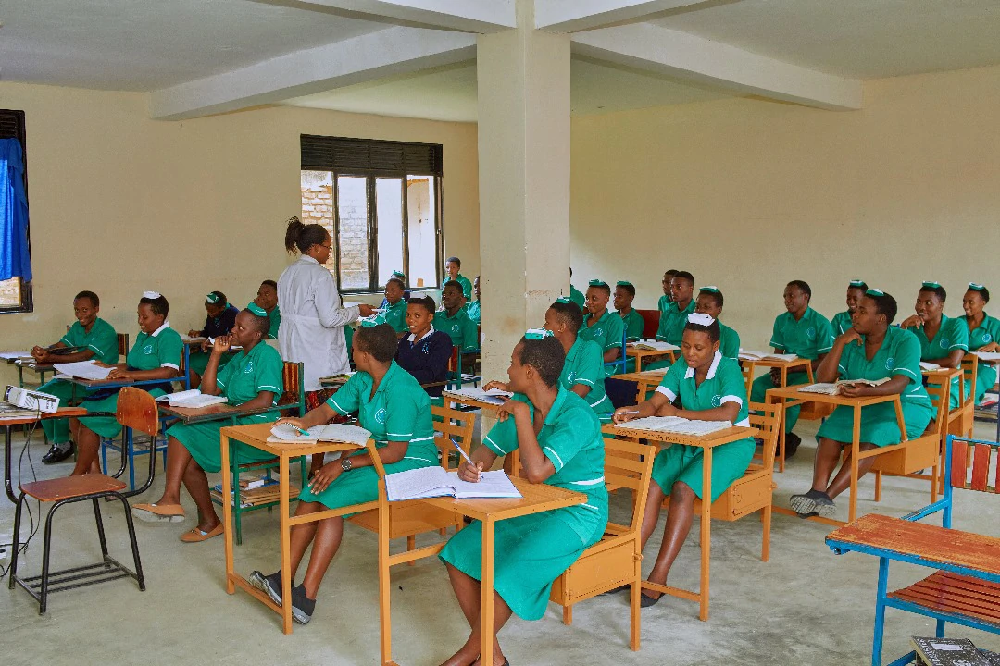
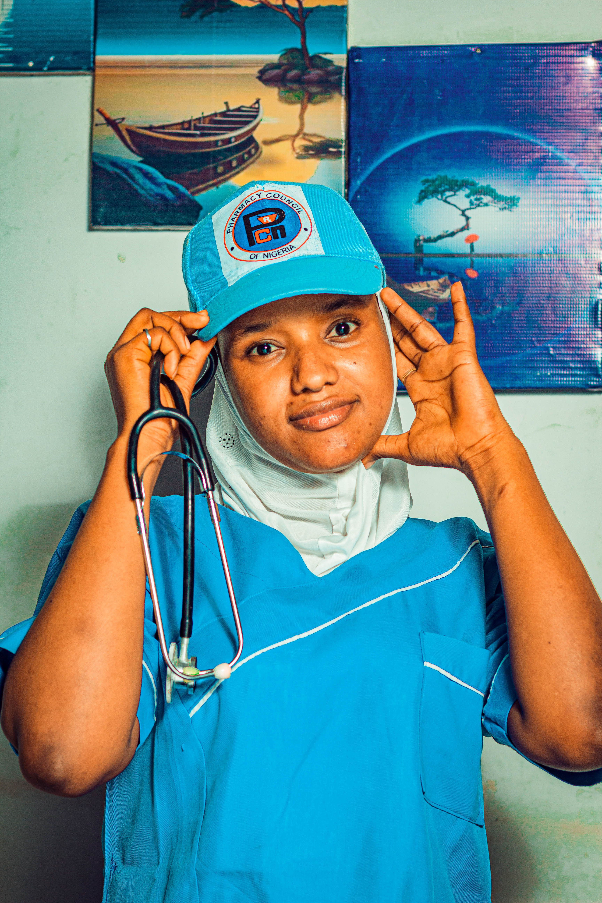

Practise essential skills
Develop practical skills in a guided learning environment before applying them in real care settings.
Build the knowledge, practical skills, and professional values needed to provide compassionate nursing care.
Explore our programmesNursing education brings together classroom learning and practical skill development. Training activities and placement arrangements depend on the programme and current availability; contact the school for details.
Develop practical skills in a guided learning environment before applying them in real care settings.

Strengthen your understanding through study, discussion, and learning with fellow students.

Develop respect, clear communication, responsibility, and compassion in your approach to care.
Clinical practice should be carried out with appropriate guidance and in line with programme requirements. Ask the school about the learning settings, supervision, and practical requirements for your programme.